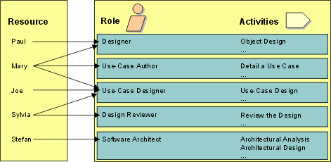

|
A role defines the behavior and responsibilities of an individual, or a set of individuals working together, in the
business. The behavior of each role is defined as a set of tasks. The responsibilities of each role are usually defined
relative to certain work products, such as documents, for example. Examples of roles are designer, software architect,
and reviewer. Through the associated set of tasks, the role also implicitly defines a competence.
Note that roles are not individuals; instead, they describe how individuals should behave in the business, and what
responsibilities these individuals have.
The project typically has at its disposal a number of resources, individuals which have specific competencies.
For example, Joe, Marie, Paul, Sylvia are individuals with different, although overlapping competencies. Using the
roles defined in the delivery process, map resources available to the project onto roles they can play.

The association of individual to role is dynamic over time, driven by the phase in the project lifecycle and the work
to be performed.
-
An individual might act as several different roles in the same day: For example, Sylvia might be a Reviewer in the
morning, and a Use-Case Designer in the afternoon.
-
An individual might act as several roles simultaneously: For example, Jane could be both the Software Architect and
the Designer of a certain class, and also the Package Owner of the package that contains this class.
-
Several people can act as the same role to perform a certain task together, acting as a team: For example, Paul and
Mary could be both Use-Case Designers of the same use case.
Try to allocate responsibilities so that there is as little hand-off of work products from one resource to another:
have the same person or team design and implement a subsystem, so that they do not have to re-learn work already done
by others.
When the same team designs as well as implements, there is a smooth transition from design to implementation. In
addition, it makes for better designers: by learning what works and what does not, they gain a better sense of good
design and incorporate it into future work. Like a sculptor, the good designer must understand the medium of
expression, which for software is the implementation environment.
|